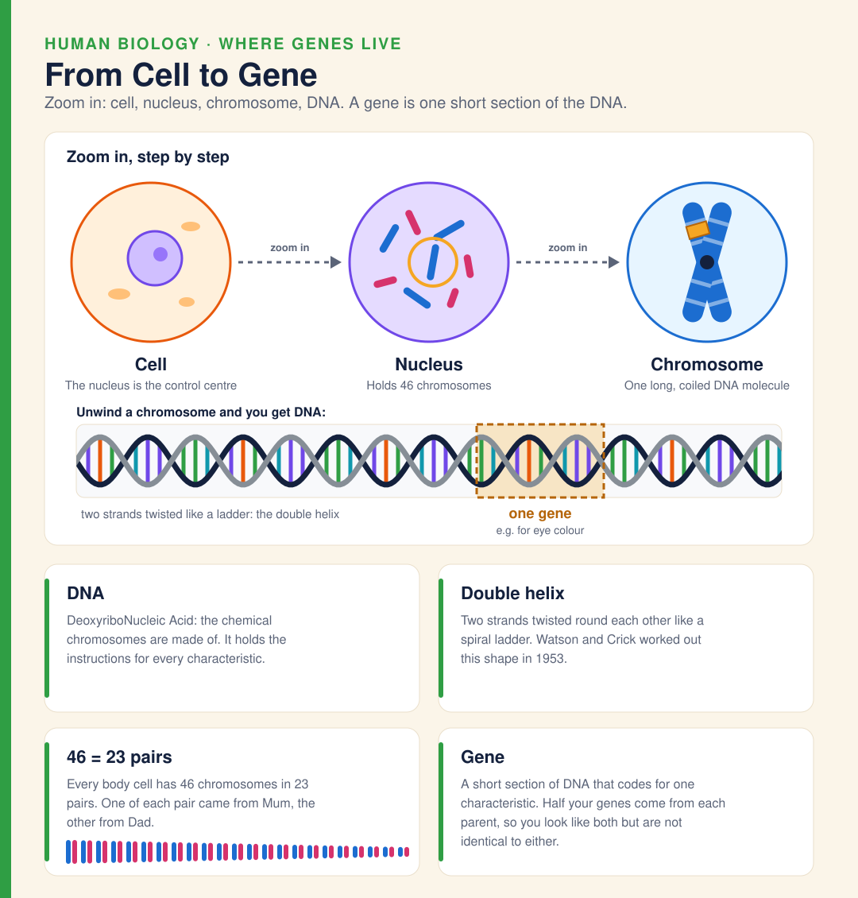

Diagram
From Cell to Gene
Zoom in from a cell to a gene. The nucleus is the control centre of the cell and holds 46 chromosomes. Each chromosome is one long, coiled molecule of DNA (deoxyribonucleic acid). DNA is a double helix: two strands twisted like a spiral ladder, a shape worked out by Watson and Crick in 1953. A gene is a short section of DNA that codes for one characteristic, such as eye colour. Every body cell has 46 chromosomes in 23 pairs: one of each pair comes from Mum and the other from Dad, so you look like both parents but are not identical to either.
Caption & source →